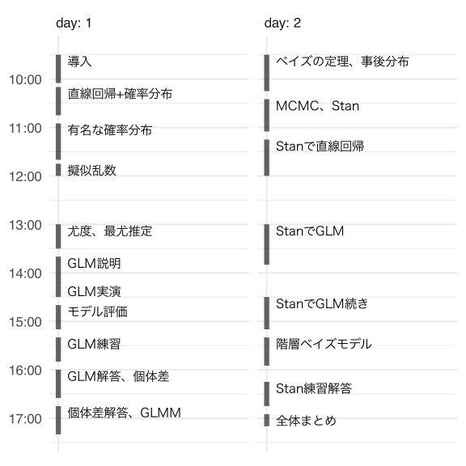

統計モデリング概論 DSHC 2025
- 講師: 岩嵜航 (東北大学生命科学研究科)
- 日程: 2025 {08-27, 09-03} 09:30–17:30
- 場所: オンライン

実行環境の準備
DSHC 2025 参加者は
Google Colab さえ利用できればOK。
下記の演習資料のリンクから
preparation.ipynb が実行できることを確認しておくとなお安心。
手元のmacOSに講義用の仮想環境を用意する一例 (Colabに合わせて 3.11 を指定してあるが、最新版 ≥3.13 でも大丈夫なはず):
WORKON_HOME=${HOME}/.virtualenvs
uv_python=3.11
uv python install $uv_python
uv venv -p $uv_python ${WORKON_HOME}/dshc2025
source ${WORKON_HOME}/dshc2025/bin/activate
uv pip install -U jupyterlab seaborn statsmodels cmdstanpy arviz
jupyter lab preparation.ipynb
演習資料
- Colab向けipynbファイル置き場: https://drive.google.com/drive/folders/1ACjnVpvShS1vOL7niFlROL8cIlKClFjN?usp=sharing
- ローカル環境向け・予備 (中身は上のと同じ)
講義資料
リンク先では←→キーで戻る・進む。
- 2025-08-27 09:30 | 導入
- 2025-08-27 10:30 | 直線回帰、確率分布、擬似乱数生成
- 2025-08-27 13:00 | 尤度、最尤推定
- 2025-08-27 14:00 | 一般化線形モデル(GLM)
- 2025-08-27 16:00 | 個体差、一般化線形混合モデル(GLMM)
- 2025-09-03 09:30 | ベイズの定理、事後分布、MCMC
- 2025-09-03 13:00 | StanでGLM
- 2025-09-03 15:00 | 階層ベイズモデル(HBM)